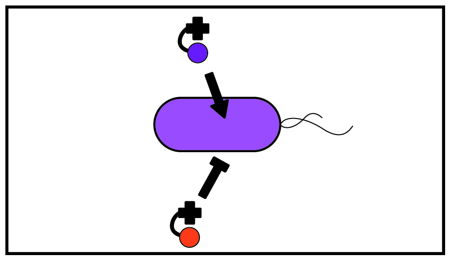
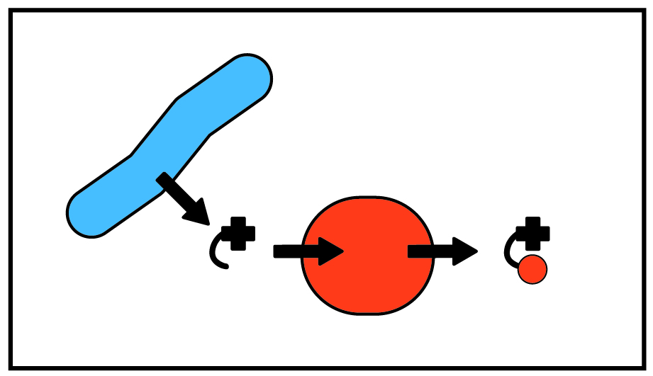
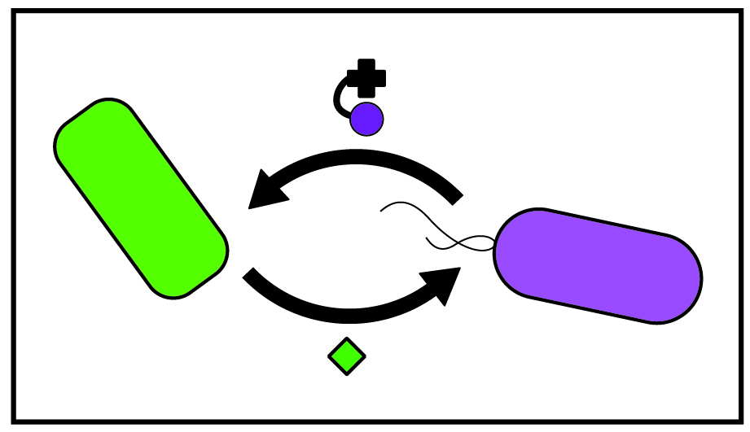

How and why do microbes rely on each other?
In the natural world, microbes live in communities where individuals rely on one another. The vast majority of microbes cannot produce all of the nutrients they require, and instead depend on other microbes to produce nutrients such as amino acids and vitamins. This type of microbial interaction, nutrient sharing, is a major driver of microbial community assembly and function.
To study how nutrient sharing occurs in microbial communities, we specifically focus on vitamin B12 and B12 analogs, collectively termed corrinoids. Corrinoids are cofactors involved in the biosynthesis of amino acids and DNA, carbon metabolism, and many specialized metabolic processes. With a focus on corrinoids, the Taga Lab dissects molecular interactions and interdependencies critical to communities. Interestingly, while the majority of microorganisms use corrinoids, only a subset of microbes can produce them. We study the biosynthesis of corrinoids, how bacteria obtain corrinoids from their environment, and the role of corrinoid sharing in microbial community dynamics. We take interdisciplinary approaches combining biochemistry, molecular biology, microbiology, computational modeling, and bioinformatics in innovative ways to investigate three main areas of cofactor sharing:
What factors determine an organism’s cofactor preference?
Organisms require corrinoids with particular structures for growth. However, the molecular basis of preference (selectivity) between corrinoids is poorly understood and cannot yet be predicted. Using biochemistry and molecular biology, we characterize corrinoid-dependent enzymes to identify protein residues responsible for discriminating between different corrinoids. We also investigate the regulatory responses of organisms to the presence of different corrinoids.
One of the main goals of our work is to bridge sequence and function: to predict from an organism’s genome how different corrinoids will interact with corrinoid-binding proteins. We aim to uncover determinants of corrinoid selectivity in DNA sequences and predict which corrinoids microbes require for growth and survival. Ultimately, we hope to use these predictions to develop new ways to manipulate microbial communities, and help scientists to culture a wider range of microbes.
How do microbes share nutrients?
The majority of organisms cannot produce corrinoids and instead must obtain corrinoids from their environment. Curiously, in contrast to other nutrients, scientists have not discovered a cellular system for exporting corrinoids. The question thus remains: how do corrinoids, produced by a small subset of bacteria, exit cells and become a resource in the environment for consumption by other microbes? Using synthetic co-cultures of cross-feeding bacterial strains, we investigate the role of cell death in nutrient release into the environment.
Furthermore, in addition to scavenging complete corrinoids, microbes can scavenge precursors to corrinoids. We work to characterize the variety of corrinoid precursors that may be shared by microbes in microbial communities by predicting possible shared precursors with bioinformatics, and testing predictions in culture.
How do microorganisms that share nutrients coexist and coevolve?
The details of how microbes depend on one another nutritionally remains enigmatic. What is the metabolic cost of producing a shared metabolite? How does nutritional interdependence shape the evolutionary trajectory of microbes?
To address these questions, we developed synthetic co-cultures of metabolically interdependent bacterial strains. To test hypotheses about vitamin B12 interdependence in microbial communities we experimentally manipulate these co-cultures, carry out laboratory evolution experiments, and use computational approaches to model co-culture dynamics.